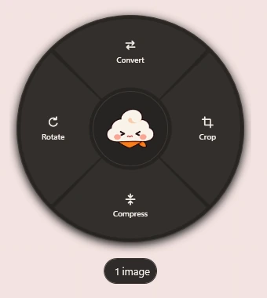
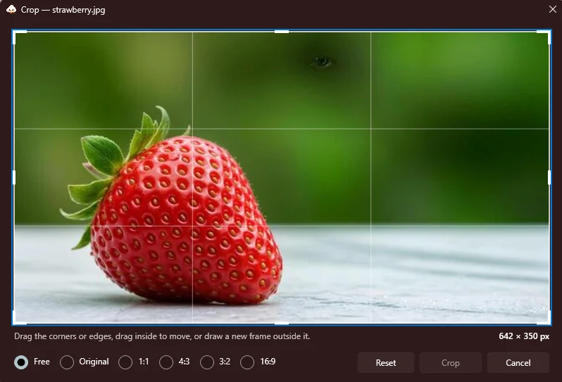

A small utility for Windows
Your files.
A little easier.
Kumo puts everyday file actions in a radial menu that opens where you are already working. Drag files in File Explorer, tap Shift, and release on what you want done.

Three moves, no windows to open
- Start dragging. Pick up one or more files in File Explorer or on the desktop.
- Tap Shift. Kumo's menu appears under the pointer, showing only what works for those files.
- Release on an action. Results are saved as new files next to the originals.
Holding Shift instead of tapping it keeps Windows' usual move behaviour. You can also press Ctrl Alt K for the files selected in Explorer, or open Kumo from the notification area.
What it does in {{version}}
Images
- Convert
- PNG, JPEG, WebP, BMP and GIF to PNG, JPEG, WebP, BMP or PDF.
- Crop
- In a preview editor with handles, guides and ratios such as 1:1, 4:3 and 16:9.
- Rotate
- Turn images without opening an editor.
- Compress
- Smaller JPEG and WebP files; PNG compression is lossless.
PDFs
- Merge
- Combine several PDFs, or several images, into one document.
- Split
- One file per page, or only the pages you choose.
- Protect
- Save a password-protected copy.
- To images
- Turn pages into PNG or JPEG.

Your files stay on your PC. Everything is processed locally and nothing is uploaded. Kumo never overwrites an original; it writes new files beside it, or to a folder you choose.
Not there yet. Video, audio, HEIC, TIFF, Word documents, PDF text extraction and image resizing are not supported in this version.
Open source
Kumo is free and released under the MIT License. The code, the issue tracker and every release live on GitHub. Bug reports and pull requests are welcome.